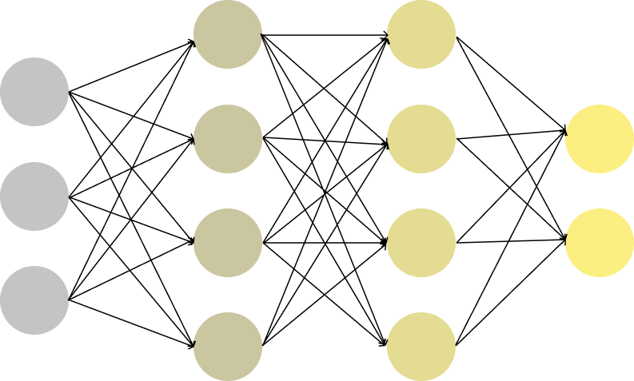

사람은 눈으로 물건을 인식하고 행동의 판단을 내리는 것 처럼 기계도 카메라를 통해서 물체를 인식 할 수 있는 기술을 ‘이미지 인식(Image Recognition)'이라고 합니다. 이 기술은 자율주행 자동차, 안면 인식, 엑스레이 사진 분석에 활용되고 있습니다.
이미지 인식을 위해 어떤 물체를 판단하는지 종류를 나누는 ‘분류(Classification)'를 진행해야합니다. 이를 위해서는 학습할 수 있는 물체 사진들이 필요합니다.
이미지 인식 기술이 더 활발히 사용될 수 있었던 계기에는 합성곱 신경망 (CNN, Convolutional Neural Network) 이 큰 역활을 했습니다. CNN은 이미지, 비디오, 오디오 등을 분류하는 딥러닝에 사용되는 알고리즘이